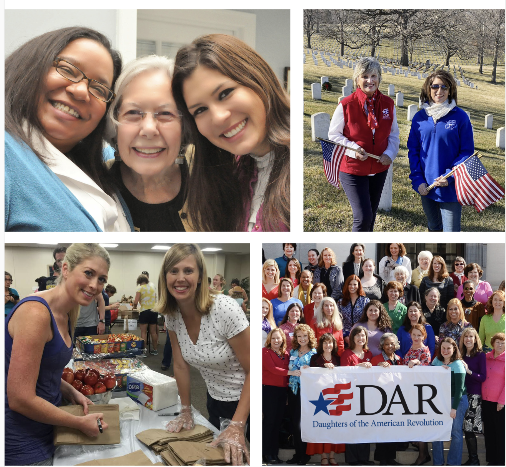

Welcome to Mariemont Chapter, NSDAR!
We are women from Mariemont and surrounding communities in southwest Ohio who are passionate about community service, preserving history, educating children, and honoring those who serve or have served our nation. We are part of the National Society Daughters of the American Revolution (NSDAR or DAR), a nonprofit, nonpolitical women’s service organization.
Organized in 1930, Mariemont Chapter has carried the DAR mission forward for more than 95 years.
Mariemont Daughters in the community
What do we do?
Mariemont Daughters honor the people and events that shaped our nation by serving our neighbors today. Our work follows the three mission areas of DAR: historic preservation, education, and patriotism.
Historic preservation
We help preserve local stories, genealogical records, landmarks, and the memory of American Revolutionary War Patriots. The chapter has marked historic sites in the community and supported preservation projects throughout southwest Ohio.
Education
We encourage young people through student programs, essay contests, literacy efforts, awards, and support for DAR schools. Educational exhibits also help community members connect with American history and civic life.
Patriotism
We honor veterans, support active-duty service members, promote Constitution Week, and encourage informed citizenship. Chapter programs provide practical opportunities to serve and remember.
Chapter moments
Friendship in service
Across generations, Mariemont Daughters come together to honor veterans, support neighbors, learn, and celebrate the friendships that make service meaningful.

Sharing history with our neighbors
Public displays, commemorations, and educational programs invite the community to explore the American Revolution, the Constitution, and the continuing story of our nation.
Interested in membership?
We would be glad to help you begin your DAR journey.